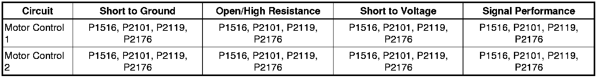

P2176
DTC P1516, P2101, P2119, or P2176
Diagnostic Instructions
* Perform the Diagnostic System Check - Vehicle (Initial Inspection and Diagnostic Overview) prior to using this diagnostic procedure.
* Review Strategy Based Diagnosis (Initial Inspection and Diagnostic Overview) for an overview of the diagnostic approach.
* Diagnostic Procedure Instructions (Initial Inspection and Diagnostic Overview)provides an overview of each diagnostic category.
DTC Descriptors
DTC P1516
- Throttle Actuator Control (TAC) Module Throttle Actuator Position Performance
DTC P2101
- Throttle Actuator Position Performance
DTC P2119
- Throttle Closed Position Performance
DTC P2176
- Minimum Throttle Position Not Learned
Diagnostic Fault Information

Circuit/System Description
The engine control module (ECM) is the control center for the throttle actuator control (TAC) system. The ECM determines the drivers intent and then calculates the appropriate throttle response. The ECM achieves throttle positioning by providing a pulse width modulated voltage to the TAC motor through the Motor control 1 and Motor control 2 circuits.
Two processors are also used to monitor the TAC system data. Both processors are located within the ECM. Both processors monitor each other's data to verify that the indicated throttle position is correct.
Conditions for Running the DTC
P1516 and P2101
* DTC P0068 or P0121 are not set.
* The ignition is ON.
* The ignition voltage is greater than 11 volts.
* The system is not in the Battery Save mode.
* The engine is running.
* DTC P1516 and P2101 run continuously when the above conditions are met.
P2119
* The ignition is ON.
* The ignition voltage is greater than 8 volts.
* The system is in the Battery Save mode.
* DTC P2119 runs continuously when the above conditions are met.
P2176
* DTC P0068, P0120, P0122, P0123, P0220, P0222, or P0223 are not set.
* The ignition is ON.
* The ignition voltage is greater than 8 volts.
* The system is not in the Battery Save mode.
* The engine is running.
* DTC P2176 run continuously when the above conditions are met.
Conditions for Setting the DTC
P1516
The indicated throttle position does not match the predicted throttle position for greater than 0.2 second.
P2101
The indicated throttle position does not match the predicted throttle position for greater than 0.1 second.
P2119
The ECM determines that the throttle blade did not return to the rest position within 720 milliseconds.
P2176
The difference between the predicted and the actual throttle position is greater than a calibrated amount for greater than 1.8 seconds.
Action Taken When the DTC Sets
P1516, P2101, and P2176
* DTCs P1516, P2101, and P2176 are Type A DTCs.
* DTC P2119 is a Type C DTC.
* The ECM commands the TAC system to operate in the Reduced Engine Power mode.
* A message center or an indicator displays Reduced Engine Power.
* Under certain conditions the control module commands the engine OFF.
P2119
The driver information center, if equipped, may display a message.
Conditions for Clearing the MIL/DTC
* DTCs P1516, P2101, and P2176 are Type A DTCs.
* DTC P2119 is a Type C DTC.
Reference Information
Schematic Reference
Engine Controls Schematics (Electrical Diagrams)
Connector End View Reference
Component Connector End Views (Connector Views)
Description and Operation
Throttle Actuator Control (TAC) System Description (Throttle Actuator Control (TAC) System Description)
Electrical Information Reference
* Circuit Testing (Component Tests and General Diagnostics)
* Connector Repairs (Component Tests and General Diagnostics)
* Testing for Intermittent Conditions and Poor Connections (Component Tests and General Diagnostics)
* Wiring Repairs (Component Tests and General Diagnostics)
DTC Type Reference
Powertrain Diagnostic Trouble Code (DTC) Type Definitions (Diagnostic Trouble Code Descriptions)
Scan Tool Reference
Control Module References (Programming and Relearning)for scan tool information
Circuit/System Verification
1. Ignition ON, engine OFF, use a scan tool to observe the throttle position (TP) sensor 1 indicated position. Throttle position should increase as pedal is applied and decrease as the pedal is released. When no accelerator pedal activity is detected, the throttle position will return to the spring loaded default position.
2. Engine running, observe the DTC information with a scan tool. DTCs P1516, P2101, P2119 or P2176 should not set.
3. Operate the vehicle within the Conditions for Running the DTC. You may also operate the vehicle within the conditions that you observed from the Freeze Frame/Failure Records data.
Circuit/System Testing
Caution: Turn OFF the ignition before inserting fingers into the throttle bore. Unexpected movement of the throttle blade could cause personal injury.
1. Inspect the throttle body for the following conditions:
* A throttle blade that is NOT in the rest position
* A throttle blade that is binding opened or closed
* A throttle blade that is free to move open or closed positions WITHOUT spring pressure
• If a condition is found, replace the throttle body assembly.
2. Ignition OFF, disconnect the harness connector at the throttle body.
3. Ignition ON, verify that a test lamp does not illuminate between motor control 1 circuit terminal B and ground.
• If the test lamp illuminates, test the motor control circuit for a short to voltage. If the circuit tests normal, replace the ECM.
4. Ignition ON, verify that a test lamp does not illuminate between motor control 2 circuit terminal A and ground.
• If the test lamp illuminates, test the motor control circuit for a short to voltage. If the circuit tests normal, replace the ECM.
5. Ignition ON, verify that a test lamp does not illuminate between motor control 1 circuit terminal B and B+.
• If the test lamp illuminates, test the motor control circuit for a short to ground. If the circuit tests normal, replace the ECM.
6. Ignition ON, verify that a test lamp does not illuminate between motor control 2 circuit terminal A and B+.
• If the test lamp illuminates, test the motor control circuit for a short to ground. If the circuit tests normal, replace the ECM.
7. Ignition OFF, allow sufficient time for the ECM to completely power down. Connect a DMM between the motor control 1 circuit terminal B and ground.
Important: When measuring peak voltage, ensure that the DMM is on the proper voltage scale and that the response time is set to 1 ms.
8. Measure for B+ on the motor control 1 circuit terminal B as the ignition is turned ON.
• If the peak voltage is not within 1 volt of B+, test the circuit for an open/high resistance. If the circuit tests normal, replace the ECM.
9. Ignition OFF, allow sufficient time for the ECM to completely power down.
10. Measure for B+ on the motor control 2 circuit terminal A as the ignition is turned ON.
• If the peak voltage is not within 1 volt of B+, test the circuit for an open/high resistance. If the circuit tests normal, replace the ECM.
11. If all circuits test normal, replace the throttle body.
Repair Instructions
Perform the Diagnostic Repair Verification (Verification Tests) after completing the diagnostic procedure.
* Control Module References (Programming and Relearning)for ECM replacement, setup, and programming
* Throttle Body Assembly Replacement (Removal and Replacement)